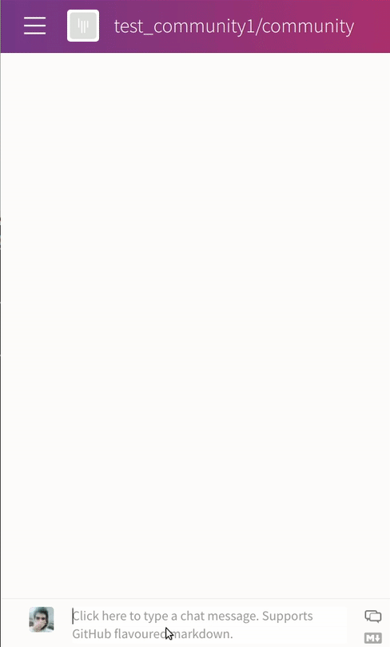

Gitter ML Inference Chatbot¶
This tutorial shows how to use configs in DFFML operations. We’ll be implementing a Gitter chatbot. Let’s take a look at the final result before moving forward.
Okay, Let’s start!! We’ll be using the Gitter’s Streamping API to collect chats, for this we need an authorization token from Gitter. Go to https://developer.gitter.im/apps and get the personal access token for your chatbot (If you are redirected to the Gitter docs from this URL, sign in and try again).
Our dataflow will take a Gitter room URI as input (For https://gitter.im/dffml/community
dffml/community is the URI), listens to chats in the room and replies to
messages which are directed to our bot.
Note
All the code for this example is located under the examples/dataflow/chatbot directory of the DFFML source code.
You’ll need to install aiohttp
and dffml-model-scikit (The model used for prediction).
$ pip install aiohttp dffml-model-scikit
We’ll write the operations for this dataflow in operations.py
Adding necessary imports and defining Definitions for operation
inputs.
operations.py
import io
import re
import sys
import json
import tempfile
import contextlib
from aiohttp import ClientSession, ClientTimeout
from dffml.cli.cli import CLI
from dffml import op, config, Definition, BaseSecret
ACCESSTOKEN = Definition(name="access_token", primitive="str")
ROOMNAME = Definition(name="room_name", primitive="str")
ROOMID = Definition(name="room_id", primitive="str")
MESSAGE = Definition(name="message", primitive="str")
TOSEND = Definition(name="to_send", primitive="str")
Defining config for our operations
operations.py
@config
class GitterChannelConfig:
secret: BaseSecret
All requests to Gitter’s API requires the room id of our room.
get_room_id gets the room id from room name (The input to
our dataflow).
operations.py
@op(
inputs={"room_uri": ROOMNAME},
outputs={"room_id": ROOMID},
config_cls=GitterChannelConfig,
imp_enter={
"secret": lambda self: self.config.secret,
"session": lambda self: ClientSession(trust_env=True),
},
ctx_enter={"sctx": lambda self: self.parent.secret()},
)
async def get_room_id(self, room_uri):
# Get unique roomid from room uri
access_token = await self.sctx.get("access_token")
headers = {
"Content-Type": "application/json",
"Accept": "application/json",
"Authorization": f"Bearer {access_token}",
}
api_url = await self.sctx.get("api_url")
url = f"{api_url}/rooms"
async with self.parent.session.post(
url, json={"uri": room_uri}, headers=headers
) as resp:
response = await resp.json()
return {"room_id": response["id"]}
We listen to new messages directed to our bot.
operations.py
@op(
inputs={"room_id": ROOMID},
outputs={"message": MESSAGE},
config_cls=GitterChannelConfig,
imp_enter={
"secret": lambda self: self.config.secret,
"session": lambda self: ClientSession(
trust_env=True, timeout=ClientTimeout(total=None)
),
},
ctx_enter={"sctx": lambda self: self.parent.secret()},
)
async def stream_chat(self, room_id):
# Listen to messages in room
access_token = await self.sctx.get("access_token")
headers = {
"Accept": "application/json",
"Authorization": f"Bearer {access_token}",
}
stream_url = await self.sctx.get("stream_url")
url = f"{stream_url}/rooms/{room_id}/chatMessages"
botname = await self.sctx.get("botname")
async with self.parent.session.get(url, headers=headers) as resp:
async for data in resp.content:
# Gitter sends " \n" at some intervals
if data == " \n".encode():
continue
data = json.loads(data.strip())
message = data["text"]
# Only listen to messages directed to bot
if f"@{botname}" not in message:
continue
yield {"message": message}
We’ll use this op to send replies back to the chatroom
operations.py
@op(
inputs={"message": TOSEND, "room_id": ROOMID},
config_cls=GitterChannelConfig,
imp_enter={
"secret": lambda self: self.config.secret,
"session": lambda self: ClientSession(trust_env=True),
},
ctx_enter={"sctx": lambda self: self.parent.secret()},
)
async def send_message(self, message, room_id):
access_token = await self.sctx.get("access_token")
headers = {
"Content-Type": "application/json",
"Accept": "application/json",
"Authorization": f"Bearer {access_token}",
}
try:
message = json.loads(message)
message = json.dumps(message, indent=4, sort_keys=True)
except:
pass
# For new line we need \\n,else Gitter api
# responds with 'Bad Request'
message = message.replace("\n", "\\n")
api_url = await self.sctx.get("api_url")
url = f"{api_url}/rooms/{room_id}/chatMessages"
async with self.parent.session.post(
url, headers=headers, json={"text": message}
) as resp:
response = await resp.json()
return
This is the operation where all the logic for interpreting the messages go. If you have a Natural Language Understanding module It’d go here, so that you can parse unstructered data.
operations.py
@op(
inputs={"message": MESSAGE,},
outputs={"message": TOSEND},
config_cls=GitterChannelConfig,
imp_enter={"secret": lambda self: self.config.secret},
ctx_enter={"sctx": lambda self: self.parent.secret()},
)
async def interpret_message(self, message):
greet = ["hey", "hello", "hi"]
for x in greet:
if x in message.lower():
return {"message": "Hey Hooman ฅ^•ﻌ•^ฅ"}
def extract_data(raw_data):
"""
Parses data from text
eg
>>> raw_data = "
details:
features: Years:int:1 Expertise:int:1 Trust:float:1
predict: Salary:float:1
data:
Years,Expertise,Trust,Salary
0,1,0.1,10
1,3,0.2,20
2,5,0.3,30
3,7,0.4,40
"
>>> extract_data(raw_data)
{
model-data:
"
Years,Expertise,Trust,Salary
0,1,0.1,10
1,3,0.2,20
2,5,0.3,30
3,7,0.4,40
"
,
features:
Years:int:1 Expertise:int:1 Trust:float:1
,
predict: Salary:float:1
}
"""
raw_data = raw_data.split("data:") # (Feature details, training data)
data = {"model-data": raw_data[1]}
raw_data = raw_data[0].split(
"\n"
) # splits feautre details to seprate lines
# Iterate and add to to dictionary `data`
for x in raw_data:
k, *v = x.split(":")
if isinstance(v, list): # for features
v = ":".join(v)
k = k.strip()
v = v.strip()
if k: # avoid blank
data[k] = v
return data
# Removing username from message
# The regex matches @ followed by anything that
# is not a whitespace in the first group and
# the rest of the string in the second group.
# We replace the string by the second group.
message = re.sub(r"(@[^\s]+)(.*)", r"\2", message).strip()
if message.lower().startswith("train model"):
return {"message": "Gimme more info!!"}
elif message.lower().startswith("predict:"):
# Only replace first occurence of predict
# because the feature to predict will be labeled predict
raw_data = message.replace("predict:", "", 1).strip()
cmds = ["predict", "all"]
elif message.lower().startswith("details:"):
raw_data = message.replace("details:", "",).strip()
cmds = ["train"]
else:
return {"message": " Oops ,I didnt get that ᕙ(⇀‸↼‶)ᕗ "}
# We'll use scikit logistic regression
data = extract_data(raw_data)
model_type = "scikitlr"
features = data["features"].split(" ")
predict = data["predict"]
model_data = data["model-data"]
with tempfile.NamedTemporaryFile(suffix=".csv") as fileobj:
fileobj.write(model_data.lstrip().encode())
fileobj.seek(0)
stdout = io.StringIO()
with contextlib.redirect_stdout(stdout):
preds = await CLI.cli(
*cmds,
"-model",
model_type,
"-model-directory",
"tempModel",
"-model-features",
*features,
"-model-predict",
predict,
"-sources",
"f=csv",
"-source-filename",
fileobj.name,
)
if "train" in cmds:
return {"message": "Done!!"}
else:
m = {}
for pred in preds:
pred = pred.predictions()
m.update({p: pred[p]["value"] for p in pred})
message = [f"{k}: {v}" for k, v in m.items()]
message = "\n".join(message)
return {"message": message}
Our operations are get_room_id, stream_chat, send_message and interpret_message.
All of them use at least one config. The common config being INISecretConfig which
loads secret token and bot name from the ini config file.
configs.ini
[secrets]
access_token = EnterAccessToken
botname = UserNameOfBot
api_url = https://api.gitter.im/v1
stream_url = https://stream.gitter.im/v1
Detour: What are imp_enter and ctx_enter?¶
config_cls=GitterChannelConfig,
imp_enter={"secret": lambda self: self.config.secret},
ctx_enter={"sctx": lambda self: self.parent.secret()},
This piece of code in the op decorator tells that the operation will be using
GitterChannelConfig. imp_enter and ctx_enter are basically shortcuts for
the double context entry followed in dffml.
"secret": lambda self: self.config.secret: sets the secret attribute of parent
to what is returned by the function; in this case it returns BaseSecret.
"sctx": lambda self: self.parent.secret(): calls the function and assigns the
return value to sctx attribute.
So in the operation instead of
with self.config.secret() as secret:
with sctx as secret():
sctx.call_a_method()
we can do
self.sctx.call_a_method()
Running the dataflow¶
run.py
import sys
import asyncio
from operations import *
from dffml import (
DataFlow,
run,
operation_in,
opimp_in,
INISecretConfig,
INISecret,
Input,
)
OPERATIONS = [get_room_id, stream_chat, send_message, interpret_message]
async def main():
bot_config = GitterChannelConfig(INISecret(filename="configs.ini"))
dataflow = DataFlow(
operations={x.op.name: x for x in OPERATIONS},
implementations={x.op.name: x.imp for x in OPERATIONS},
configs={x.op.name: bot_config for x in OPERATIONS},
)
room_name = "test_community1/community"
dataflow.seed = [
Input(value=room_name, definition=get_room_id.op.inputs["room_uri"])
]
async for ctx, result in run(dataflow):
pass
if __name__ == "__main__":
asyncio.run(main())
set the room name, config file name and run the dataflow
$ python run.py
Or using the command line to, create the dataflow
$ dffml dataflow create \
operations:get_room_id \
operations:stream_chat \
operations:send_message \
operations:interpret_message \
-config \
ini=operations:get_room_id.secret.plugin \
configs.ini=operations:get_room_id.secret.config.filename \
ini=operations:stream_chat.secret.plugin \
configs.ini=operations:stream_chat.secret.config.filename \
ini=operations:send_message.secret.plugin \
configs.ini=operations:send_message.secret.config.filename \
ini=operations:interpret_message.secret.plugin \
configs.ini=operations:interpret_message.secret.config.filename \
> chatbot_df.json
And run it by providing the room_name as the input
$ dffml dataflow run single \
-dataflow ./chatbot_df.json \
-inputs test_community1/community=room_name